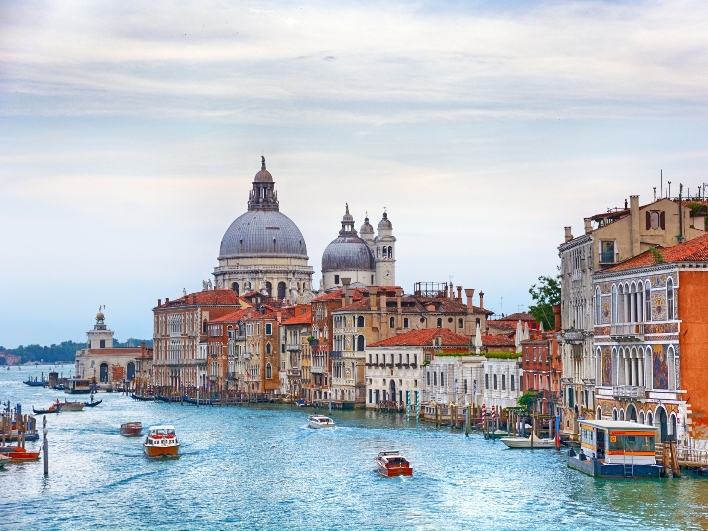
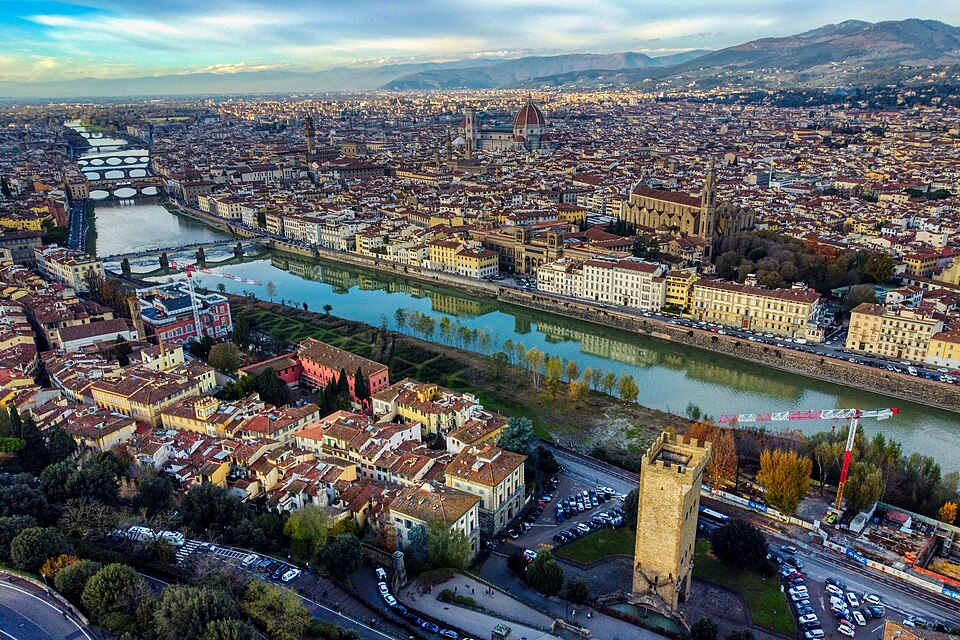
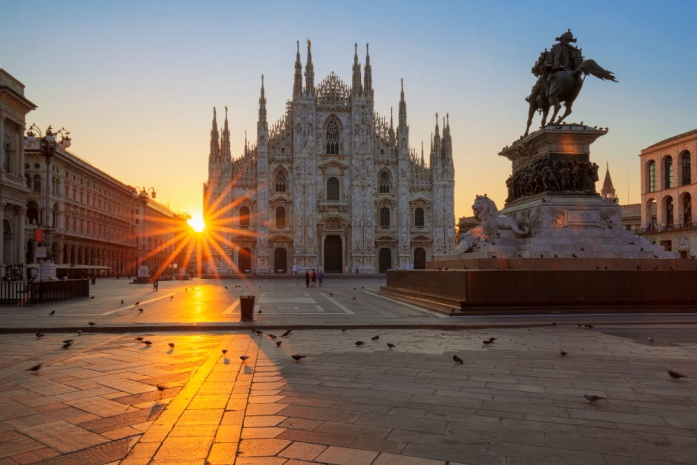
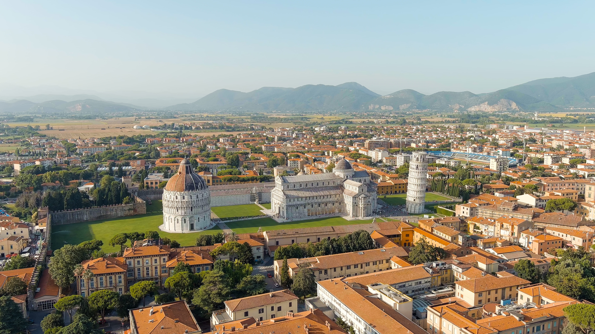
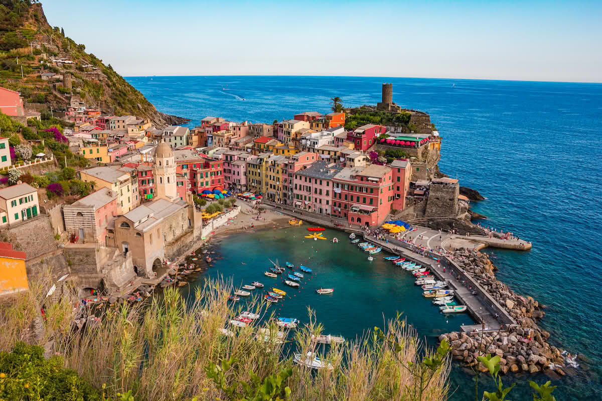

Lugares mais visitados
- Roma – Capital do país, com o Coliseu, Vaticano e Fontana di Trevi.
"Próxima do mar Mediterrâneo, Roma apresenta clima típico dessa região, sendo marcada ainda por um relevo
modesto com altitudes que não ultrapassam 140 metros. A economia de Roma tem como alicerce o setor de
comércio e serviços, com destaque para o turismo. A cidade recebe milhões de turistas todos os anos, atraídos
pelos registros da Roma Antiga e pelos elementos que expressam seus costumes contemporâneos." - Veneza – Conhecida por seus canais e gôndolas.
Veneza é uma cidade única, construída sobre um arquipélago de 118 ilhas, conectadas por mais de 400 pontes e
navegáveis por meio de canais. A cidade é famosa por sua arquitetura gótica e renascentista, além de ser um
importante centro cultural e turístico. O Carnaval de Veneza, com suas máscaras elaboradas, é um dos eventos
mais icônicos da cidade. - Florença – Berço do Renascimento, com obras de Michelangelo e Da Vinci.
Florença é considerada o berço do Renascimento, um período de grande efervescência cultural e artística. A cidade
abriga obras-primas de artistas como Michelangelo, Botticelli e Leonardo da Vinci. O Duomo, com sua cúpula
impressionante, é um dos marcos mais reconhecíveis da cidade. Florença também é famosa por sua gastronomia e
vinhos. - Milão – Centro da moda e da economia.
Milão é a capital da moda e do design, conhecida por suas boutiques de luxo e eventos de moda internacionais.
A cidade também é um importante centro financeiro e comercial da Itália. Além disso, Milão abriga a famosa
Catedral de Milão (Duomo), uma das maiores catedrais góticas do mundo. O Teatro alla Scala, um dos
teatros de ópera mais prestigiados, também está localizado em Milão. - Nápoles e Costa Amalfitana – Cultura vibrante e belas praias.
Nápoles é uma cidade vibrante, famosa por sua rica história, cultura e gastronomia, especialmente a pizza napolitana.
A cidade é cercada por belas paisagens, incluindo o famoso vulcão Vesúvio. A Costa Amalfitana, próxima a Nápoles,
é conhecida por suas deslumbrantes vistas do mar, vilarejos coloridos e praias de tirar o fôlego. É um destino
popular para turistas que buscam relaxar e apreciar a beleza natural da região. - Pisa – Famosa pela Torre inclinada.
Pisa é mundialmente conhecida por sua icônica Torre Inclinada, que é parte do complexo arquitetônico da
Piazza dei Miracoli. A torre, que começou a ser construída no século XII, é um exemplo notável de arquitetura
românica. Além da torre, Pisa possui outras atrações históricas, como a Catedral de Pisa e o Batistério. A cidade
também é um importante centro universitário, com uma das universidades mais antigas do mundo. - Cinque Terre – Vilarejos coloridos à beira do mar.
Cinque Terre é uma região costeira composta por cinco vilarejos pitorescos: Monterosso al Mare, Vernazza,
Corniglia, Manarola e Riomaggiore. Esses vilarejos são conhecidos por suas casas coloridas construídas em
penhascos íngremes, oferecendo vistas deslumbrantes do Mar da Ligúria. A região é famosa por suas trilhas
panorâmicas, vinhos locais e a culinária à base de frutos do mar.






